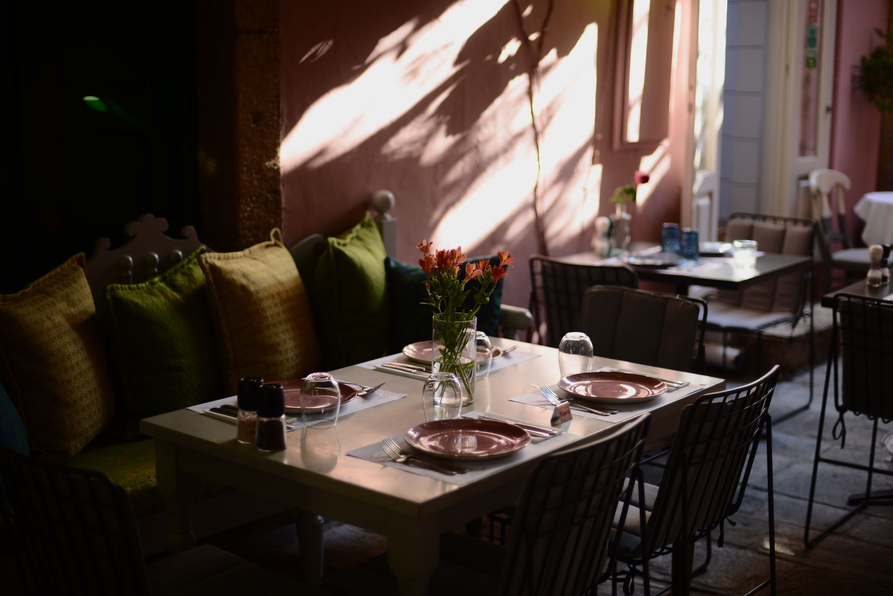
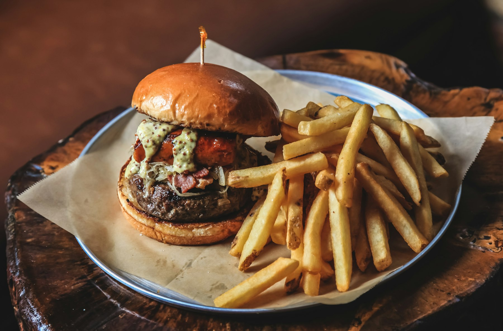

People come back
several times in one weekend
A bistro on the Plaza de la Unión Europea. A beautiful room inside, a terrace for the football outside, and owners visitors describe as some of the kindest they met.
4.8 from 482 Google reviews
What people order
Cooked properly,
served warmly
Dishes named in the venue’s own Google reviews.
- 01The burger and chips
- 02The goulash
- 03A terrace for the football
- 04Owners who remember you
Fresh, juicy,
full of flavour


In their words
482 reviews,
4.8 stars
“The interior is beautiful, but I stayed on the terrace like the other customers to watch football. The food was very well prepared; the service could have been a little more attentive to customers, but they were always friendly in welcoming people.”
“Had a great meal at Casa Bistro. The burger and chips were excellent, the meat tasted really fresh, juicy, and full of flavour. My partner had the goulash, which was absolutely delicious too. Friendly service, lovely atmosphere, and overall a really enjoyable experience. We’ll definitely be back!”
“I was visiting Torremolinos from Valencia over the weekend and ended up coming back to this spot several times. The food is absolutely amazing, and the owners are some of the kindest and most hospitable people I’ve ever met. I would definitely recommend anyone to grab a seat on their beautiful terrace and enjoy the exp”
Find us
Plaza de la
Unión Europea 20
Pl. de la Unión Europea, 20, Torremolinos, 29620 Málaga